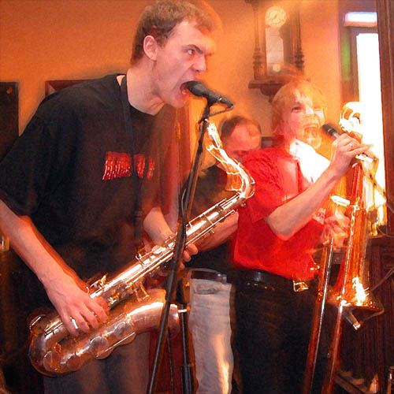
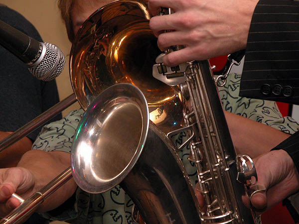

Московская блюз-фанковая команда. Одна из наиболее востребованных в престижных столичных клубах и ресторанах, а также на различных блюзовых (и не только) фестивалях. Две гитары, бас и барабаны совместно с колоритным вокалом саксофониста - Александра Бородина - составляют яркий квинтет, обладающий отличительным саундом, "изюминкой" которого является духовая секция "Сколдеров". Музыканты группы - высокопрофессиональные исполнители, имеющие большой опыт работы в различных коллективах, среди которых The B.A.C.K., The Blues Rhythm Section, Off Beat, Dr.Nick, Sky Stranger, Cry Baby, The Friends, Tim Strong Band. В настоящее время почти все участники команды тесно сотрудничают с Михаилом "Петровичем" Соколовым и входят в состав его бэнда "Bluesmakers". Помимо активной клубной деятельности и параллельного участия в проектах своих коллег, коллектив хорошо известен за пределами столицы по периодическим гастрольным выступлениям.Программа коллектива включает блюзовые и фанковые композиции и кавера известных англоязычных исполнителей, а также произведения собственного сочинения, которые войдут в русскоязычную программу.
Как ни странно, основу профессионального московского коллектива составили далеко не москвичи. Впрочем к блюзу это не имеет отношения. Да и в то время, когда Александр Бородин и Сергей Капшин познакомились в стенах Суворовского училища, они ещё не знали к чему приведут выступления "сколоченной" курсантами группы, "зажигающей" песнями "Браво" на "местных" дискотеках. Оба с севера (один из Томска, другой - уроженец Астраханской области), оба "суворовцы", оба духовики (саксофон и тромбон). За плечами Александра Бородина была музыкальная школа родного города. Сергей Капшин приобрёл опыт игры на тромбоне, пройдя годовой курс стажировки в военном оркестре в Питере, когда ему было пятнадцать лет.
Учёба на разных курсах московского военно-музыкального училища не помешала знакомству и сотрудничеству (как оказалось надолго) двух "братьев", как позже они станут себя называть. В будущем "отцы-основатели" Сколдеров нередко будут играть со своими сокурсниками.
В ожидании пока истечёт срок контракта у "младшего брата", который проходил обязательную двухгодичную службу в военном оркестре, друзья сняли захудалую жилплощадь в живописном и отдалённом от цивилизации районе Серебряного бора, где занимались в основном составлением грандиозных планов на будущее. Попытки собрать в то время группу не давали положительных результатов, и друзья играли на пару. Трудно представить какое впечатление производил в подмосковных электричках этот по военному подтянутый колоритный дуэт: высоченно-суровый саксофонист и временно переквалифицировавшийся в исполнителя на банджо живчик-Серёга.
Александр Бородин: "Кстати зарабатывали мы тогда "кучу денег", которая тут же с пользой пропивалась-проедалась!.."
С приходом весны ребята облюбовали китай-городский переход, а затем, прихватив в аренду училищный оркестровый комбик, сели играть на Арбате. На этих самых староарбатский мостовых они и были замечены и подобраны неким добрым человеком, пригласившим их поиграть в одном из своих заведений, рядом с нынешним "Старым местом" в центре Арбата. В расположенном по соседству кафе в американском стиле "Road 66" "братья" познакомились со своим первым барабанщиком - Юрием Курочкиным. В течении следующих двух лет музыканты живут и базируются в аппартемантах гостиницы "Интурист", параллельно выступая на "местных" банкетах с песнями собственного сочинения на русском языке.
Александр Бородин: "Играли что нравилось. Жёсткий разброс программы включал как произведения группы Дорз, Лед Зеппелин, так и шлягеры примадонны российской эстрады - Аллы Борисовны. Группа вообще поначалу была ориентировала на "тяжёлую" музыку и русскоязычный материал. Название же возникло случайно. Поспособствовала бюрократическая система. Группу просто НАДО БЫЛО КАК-ТО официально зарегистрировать для выплаты музыкантам зарплаты. Фирма, снимавшая помещение в "Интуристе", где мы базировались, называлась "Сколдерз". Так и записали. Только Серёга попросил приставить "блюз", что было одобрено остальными".
К тому времени состав новоявленной группы уже насчитывал 5 человек: помимо "братьев"-основателей, на басу играл знакомый по учёбе в "суворовском" кларнетист, за барабанами сидел Дмитрий Синельников, довершал компанию один из лучших московских клавишников, известный экс-"дэнсрэмблеровец" - Олег Штыров. Также в составе "Сколдеров" какое-то время играли Сергей Савельев (экс-В.А.С.К.) и пришедший вслед за ним барабанщик Андрей Филиппов. Состав частно менялся. Примерно в 2001 году, во время некоторого "кризиса" и пребывания деятельности коллектива в "замороженном" состоянии, Штыров покидает группу и вместо клавиш Сергей Капшин предлагает взять вторую гитару. Так отряд "Ворчунов" пополняется соло-гитаристом Юрием Кривошеиным, так же игравшим в то время в В.А.С.К.
Первый официальный концерт группы, сопровождавшийся распечаткой 1000 флаеров, состоялся в "Басед клаб"- незатейливом заведении, расположенном тем не менее в непосредственной близости от Кремлёвских стен (почти на Красной площади). Поначалу стилистика группы больше подходила для полу- и андеграунда, и выступления проходили в клубах, поддерживающих данную концепцию: Полнолуние, Тэксмен и проч. Группа играла регулярные концерты на этих площадках, параллельно (часто безвозмездно) осваивая клубную сферу различных уголков столицы.
Однако, так как большую часть коллектива составили экс-участники блюзовых проектов - музыкальная характеристика группы стала постепенно сводиться к одному направлению - прифанкованному блюзу. Сергей Капшин, изначально игравший в "Сколдерах" на гитаре снова взял в руки тромбон и ребята "погрузились" в Джеймса Брауна. Постепенно записывались демки, разносились по клубам, но чёткой организацией никто из группы никогда не занимался - работа всегда сама находила музыкантов.
Уже в 2001 году группа принимает самое активное участие в различных блюзовых мероприятиях, выступают в выдержанных в этом стили клубах, таких как Ритм-энд Блюз, Б.Б. Кинг.
20 декабря 2001 - "Сколдер блюз" принимает участие в IV Московском фестивале губной гармоники "Харп-Фест-4". В качестве приглашенного музыканта с ними играют известный московский харпер - Сергей "Джон" Сорокин - гармонист и фронтмен существовавшего в то время проекта 'The Evergreens', и Дмитрий Новокольский ('Apple Jack', ex -'The B.A.C.K.').
Благодаря созданному в сентябре 2001 года Юрием Кривошеиным официальному сайту группы, творчеством "Сколдеров" заинтересовались и тут же пригласили выступить киевские организаторы акции "Звёзды российского блюза". В результате чего в апреле 2002 года группа уходит в кратковременный отпуск, чтобы накопить сил перед первыми гастролями. Они получили приглашение выступить в одном из лучших блюзовых клубов Киева "Buddy Guy", где побывали уже многие именитые российские музыканты (например, Алексей "Wait" Белов, Николай Арутюнов, Борис Булкин, "Blues Cousins", "Blues Hammer Band" Петровича) а так же легенды мировой рок-музыки: "Animals", "Sweet", "Uriah Heep". Клуб не устоял перед напором и обаянием "Ворчунов", вследствие чего духовая секция "Сколдеров" задержалась у гостеприимных хозяев дольше запланированного, приобретя много новых друзей. Братья отбыли домой еще неделю спустя, увозя самые приятные воспоминания и намерение не раз ещё вернуться в хлебосольный Киев.
По иронии судьбы именно украинскому фестивалю москвичи стали обязаны близким знакомством с корифеем российской блюзовой сцены, знаменитым харпером - Михаилом "Петровичем" Соколовым. И он тоже сразу "прикипел" к ребятам и предложил сотрудничать.
Летом 2002 года - состоялась поездка в Ярославль, где группа выступила в сборном концерте, включавшем команды разных стилей и направлений - от рок-н-ролла (группа Алексея Блохина и Валерия Гилюты "Ruby Stars") до хеви-металл ("Черный Кофе" во главе с Дмитрием Варшавским). На этот раз "Сколдеры" представили 3 русскоязычные композиции собственного сочинения, которые были восприняты публикой "на ура".
22 ноября 2002 года - музыканты снова "засветились" на прошедшем уже в 5-й раз московском фестивале губной гармошки. По старой доброй традиции компанию им составил Сергей "Джон" Сорокин.
Весь 2002 и начало 2003 года группа провела, выступая в столичных клубах, часто отыгрывая по несколько концертов за день. На прошедшем весной 2003 года фестивале сайта Blues.ru группа была отмечена дипломом за "Лучшую духовую секцию". К этому времени музыканты уже активно сотрудничали с "Петровичем", играя в составе его нового музыкального проекта "Петрович и Bluesmakers".
Напряженный график команды и занятость её участников порой сразу в нескольких коллективах не позволяют музыкантам начать серьёзную работу над записью альбома. Тем не менее планы у "Сколдеров" самые грандиозные. Они постоянно подчеркивают свой интерес и направленность на подготовку именно русскоязычной программы, не довольствуясь переигрывание избитых "эвергринов". Решение такой задачи требует больших усилий. Основная проблема - сочинение текстов - по-прежнему не решена. Попытки сотрудничества с несколькими известными московскими поэтами не увенчались успехом. Наибольшим постоянством в русскоязычном репертуаре группы пользуется песня "Мама осень", подаренная группе бывшим однокурсником Александра Бородина по "суворовскому" - Александром Сырцовым. Однако идея петь на русском настолько крепка, что музыканты готовы сами взяться за сочинение текстов, тем более, что подобный опыт у них имеется.
Летом 2003 - на Арбате начало функционировать новое заведение, именуемое "Scolder Blues кафе". Несмотря на то, что официальное открытие ещё не состоялось, здесь проходят ежедневные концерты блюзовых и не только команд. В гостях у "Сколдеров" уже играли старые друзья - "Петрович", "Джон" Соколов и многие другие. Несколько раз в неделю здесь выступают и сами "Сколдеры".
Интернет-сайт SCOLDER BLUES: /band/Scolder_Blues/
